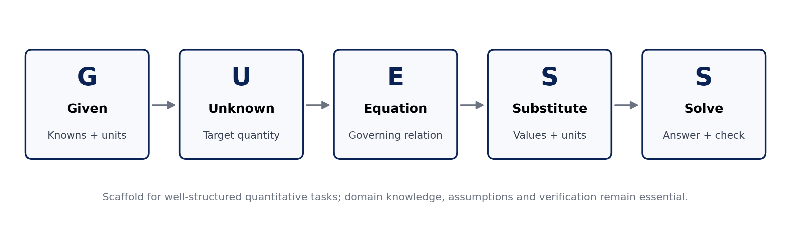
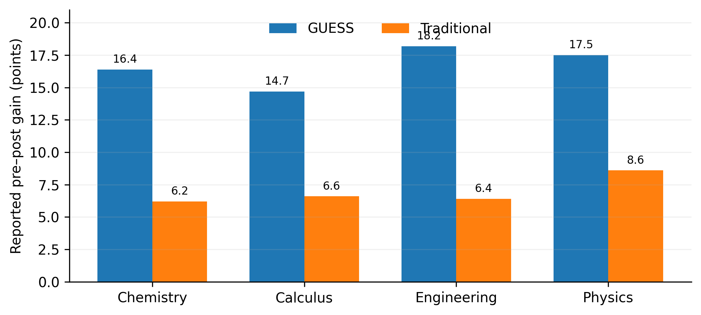

CHIATECH JOURNAL
SETEHEM · VOLUME 1 · ISSUE 1 · JULY 2026 · e020
PIONEER PUBLICATION · ACCEPTED ARTICLE · ORIGINAL RESEARCH ARTICLE · STEM EDUCATION · QUANTITATIVE REASONING · INSTRUCTIONAL DESIGN
The Given–Unknown–Equation–Substitute–Solve (GUESS) Principle for Quantitative STEM Problem Solving: A Mixed-Methods Evaluation Across Four Undergraduate Disciplines
CHIA Shiaondo Kenneth
CHIATECH Solutions and Resources Ltd, Abuja, Nigeria
ORCID: 0009-0009-6434-4586 · Correspondence: chiakenneth01@gmail.com
Article | Volume/Issue | Publication | ISSN | DOI |
|---|---|---|---|---|
e020 | 1(1) | Pioneer Issue · July 2026 | Pending assignment | Pending registration |
Abstract
Background: Students often possess isolated formulas yet struggle to represent quantitative problems, select appropriate equations and transfer a workable solution routine across STEM disciplines. Objective: This study evaluated the Given–Unknown–Equation–Substitute–Solve (GUESS) principle as a five-step scaffold for well-structured calculation problems. Methods: A sequential explanatory mixed-methods design was reported across General Chemistry I (n=78), Calculus I (n=65), Engineering Mechanics (n=42) and Introduction to Physics (n=56) at the University of Abuja during 2023–2024 (N=241). Students were assigned within courses to GUESS or traditional instruction. Pre/post problem-solving tests, structured error analysis, student interviews (n=40), classroom observations, instructor journals and think-aloud protocols (n=20) were used. Results: Reported pre–post gains were larger in GUESS groups in every course (14.7–18.2 points) than in controls (6.2–8.6 points). The reported two-way ANOVA showed a main effect of teaching approach, F(1,233)=42.68, p<.001, partial η²=.155, with no significant discipline effect or approach×discipline interaction. Equation-selection errors were 16% in the GUESS group versus 36% in controls, and variable-misidentification errors were 12% versus 24% (both p<.001). Consistent use of all five steps had the largest reported regression coefficient (B=.45, SE=.09, p<.001). Qualitative evidence indicated improved problem representation, confidence and cross-course transfer, alongside an initial time cost and resistance among some high-performing students. Conclusion: The evidence supports GUESS as a promising cross-disciplinary scaffold for well-structured quantitative problems, especially where novices need an explicit bridge from problem representation to execution. Replication should report group sizes, attrition, instrument reliability, ethics procedures and raw data so that effects can be independently verified.
Keywords: GUESS principle; STEM education; quantitative problem solving; metacognition; cognitive load; worked examples; transfer; University of Abuja
1. Introduction
Quantitative problem solving is not reducible to algebraic execution. A learner must first determine what information matters, represent the target, select a relation that is justified by the domain, substitute values without losing units or signs, execute the mathematics, and decide whether the answer is plausible. Novices frequently compress these decisions into a premature search for a formula. That shortcut can produce calculation activity without an adequate problem model.
The GUESS principle makes five of these decisions explicit: Given, Unknown, Equation, Substitute and Solve. Its educational premise is not that all STEM problems have a single linear pathway, but that an externalized routine can reduce avoidable representation errors while learners are developing domain-specific expertise. This positioning is consistent with research on scaffolding, worked examples, active problem solving and metacognitive monitoring. Recent evidence shows that active problem solving can improve test performance and reduce cognitive load across practice, while stepwise retrieval prompts embedded in worked examples can improve delayed problem-solving performance. These findings support the value of explicit, sequenced activity without implying that any one sequence should become a rigid algorithm (van den Broek et al., 2025; Zeitlhofer & Zumbach, 2026).
The present study is especially relevant because it evaluates one routine across chemistry, calculus, engineering mechanics and physics rather than treating problem solving as a purely discipline-specific skill. The central question is whether a common representation-and-execution scaffold can improve performance without erasing the conceptual knowledge unique to each field.
1.1 Research questions
• Does instruction using the GUESS principle produce larger gains in calculation-based problem-solving performance than traditional discipline-specific instruction?
• Are any observed effects consistent across chemistry, calculus, engineering mechanics and physics?
• Which error patterns and learner experiences help explain how the framework operates in practice?
2. Conceptual Basis of the GUESS Principle
The five steps can be interpreted as a compact problem-representation scaffold. Given and Unknown force an explicit inventory of known quantities, constraints and the target. Equation requires a conceptual choice: the learner must identify a relation whose variables and assumptions connect the problem state to the target. Substitute delays numerical insertion until that relation is explicit. Solve then brings together calculation, units and a reasonableness check. The framework therefore separates representation from execution—an important distinction in cognitive-load accounts of novice problem solving.

Figure 1. GUESS as an explicit representation-to-execution scaffold. The final reasonableness/unit check is shown as part of “Solve” rather than as a sixth acronym step.
The model should be understood as a scaffold rather than a universal theory of problem solving. Open-ended design, modelling and ill-structured problems require iterative problem framing, assumption revision, evidence gathering and evaluation that may loop repeatedly across the five operations. GUESS is therefore most defensible for well-structured or moderately structured quantitative tasks and as an entry point to more sophisticated modelling practices.
3. Materials and Methods
3.1 Design and setting
The source study reports a sequential explanatory mixed-methods design at the University of Abuja, Nigeria, during the 2023–2024 academic year. Four undergraduate courses were included: General Chemistry I (n=78), Calculus I (n=65), Engineering Mechanics (n=42) and Introduction to Physics (n=56), giving N=241. Within each course, students were reported as randomly assigned to a treatment condition using GUESS or a control condition using traditional discipline-specific approaches. The source record does not provide the treatment/control allocation counts by course, attrition flow or allocation procedure; these omissions are retained as limitations rather than reconstructed.
Course | Reported enrolment | Instructional comparison |
|---|---|---|
General Chemistry I | 78 | GUESS vs. traditional discipline-specific instruction |
Calculus I | 65 | GUESS vs. traditional discipline-specific instruction |
Engineering Mechanics | 42 | GUESS vs. traditional discipline-specific instruction |
Introduction to Physics | 56 | GUESS vs. traditional discipline-specific instruction |
Total | 241 | Four-course mixed-methods evaluation |
3.2 Intervention and measures
Treatment instructors were reported to teach the five-step routine explicitly through worked examples, guided practice and independent problem sets. Controls continued with the existing discipline-specific problem-solving methods. Pre- and post-tests contained multi-step calculation problems. Responses were scored with a standardized rubric covering problem representation, strategy selection, implementation correctness, answer verification and overall solution efficiency. Structured error analysis tracked recurrent conceptual and procedural mistakes.
Qualitative evidence comprised semi-structured interviews with a stratified random sample of 40 students (10 per course, split across conditions), three classroom observations per course, instructor reflective journals, and think-aloud protocols with 20 students solving unfamiliar problems. These sources were thematically coded and compared to illuminate mechanisms behind the quantitative patterns.
3.3 Analysis and reporting boundary
The source manuscript reports comparative tests, a two-way ANOVA, regression modelling and error-frequency comparisons. This Version-of-Record-style article reproduces the reported aggregate results and strengthens their interpretation; it does not recreate statistics from raw data because no row-level dataset accompanied the supplied manuscript. Accordingly, reported coefficients and p values are treated as author-reported study results rather than independently reproduced estimates.
4. Results
4.1 Pre–post performance
Table 1. Reported pre-test and post-test performance by discipline and instructional group.
Discipline | Group | Pre-test mean (SD) | Post-test mean (SD) | Gain | Reported p |
|---|---|---|---|---|---|
Chemistry | GUESS | 68.3 (12.4) | 84.7 (9.8) | +16.4 | <.001 |
Chemistry | Control | 69.1 (11.8) | 75.3 (10.5) | +6.2 | .023 |
Calculus | GUESS | 71.5 (13.2) | 86.2 (8.7) | +14.7 | <.001 |
Calculus | Control | 70.8 (12.5) | 77.4 (11.2) | +6.6 | .018 |
Engineering | GUESS | 65.7 (14.1) | 83.9 (10.3) | +18.2 | <.001 |
Engineering | Control | 66.2 (13.8) | 72.6 (12.7) | +6.4 | .031 |
Physics | GUESS | 63.9 (15.2) | 81.4 (11.6) | +17.5 | <.001 |
Physics | Control | 64.5 (14.9) | 73.1 (13.8) | +8.6 | .012 |

Figure 2. Reported course-level pre–post mean gains. The chart visualizes the source table; it does not imply equal treatment/control group sizes, which were not reported.
Across the four courses, the reported GUESS gains ranged from 14.7 to 18.2 points; control gains ranged from 6.2 to 8.6 points. As a descriptive summary across courses—not a participant-weighted effect—the mean reported gain was 16.7 points for GUESS and 7.0 points for controls. The reported two-way ANOVA indicated a main effect of teaching approach, F(1,233)=42.68, p<.001, partial η²=.155. The discipline main effect was not significant, F(3,233)=1.87, p=.136, and the approach×discipline interaction was not significant, F(3,233)=0.94, p=.422. Within the source analysis, this pattern was interpreted as evidence that the instructional advantage was not confined to a single subject.
4.2 Error patterns and predictors
Table 2. Reported conceptual error frequencies.
Error type | GUESS | Control | Reported p | Interpretive link |
|---|---|---|---|---|
Equation selection | 16% | 36% | <.001 | Equation step: explicit relation selection before substitution |
Variable misidentification | 12% | 24% | <.001 | Given/Unknown steps: clearer problem representation |
Table 3. Reported regression coefficients for factors associated with improvement.
Factor | B | SE | Reported p |
|---|---|---|---|
Prior mathematics achievement | .32 | .08 | <.001 |
Problem complexity | .28 | .07 | <.001 |
Consistent application of all five GUESS steps | .45 | .09 | <.001 |
Student self-efficacy | .24 | .07 | .002 |
Instructor experience with the method | .18 | .08 | .025 |
Consistent application of all five steps had the largest reported coefficient (B=.45). This supports an interpretation in which the framework functions as a coordinated sequence rather than as isolated reminders. It does not, however, establish that step consistency is exogenous: more capable, motivated or better-supported students may also be more likely to apply the full routine. The coefficient is therefore best read as an association within the reported model.
4.3 Qualitative findings
Thematic evidence converged on four implementation themes. First, students described more deliberate initial representation of problems rather than immediate formula search. Second, the routine appeared to reduce feelings of being overwhelmed by complex calculations. Third, some students reported using the same sequence across chemistry, physics and calculus, suggesting perceived transfer. Fourth, implementation was not cost-free: structured solutions initially took longer, some high-performing students resisted a prescribed routine, and instructors needed to adapt the approach for complex or open-ended tasks.
5. Discussion
The most defensible interpretation of the findings is that GUESS externalizes a sequence of decisions that novices often fail to coordinate. The largest reported reductions occurred in conceptual representation errors—equation selection and variable identification—rather than being framed merely as faster arithmetic. This matters because a wrong representation cannot usually be repaired by correct calculation.
The cross-course pattern is also important. Contemporary research on problem solving suggests that active problem-solving episodes support performance and metacognitive monitoring, while worked examples are most effective when their structure is clear and when learners are prompted to engage with solution steps rather than passively copy them (van den Broek et al., 2025; Zeitlhofer & Zumbach, 2026). GUESS can be located between these traditions: it is not a worked example by itself, but it provides a common syntax through which worked examples, guided practice and independent problems can be organized.
The absence of a significant approach×discipline interaction in the reported ANOVA supports cross-disciplinary promise, but it should not be inflated into proof of universal transfer. The study involved one institution, four courses and one academic year. Chemistry stoichiometry, mechanics, calculus and physics share quantitative structure, yet advanced engineering design, data-rich modelling and ill-structured scientific inquiry require iterative cycles beyond the five-step routine. A mature implementation should therefore teach GUESS as a scaffold that can be compressed, expanded or looped as expertise grows.
6. Implications for Teaching and Curriculum
Instructional phase | Recommended use of GUESS | Teacher action | Evidence to monitor |
|---|---|---|---|
Modelling | Teacher demonstrates all five steps aloud | Explain why each quantity/equation is selected, not only what is written | Student explanation quality |
Guided practice | Partially completed GUESS templates | Fade prompts as accuracy improves | Representation and equation-selection errors |
Independent practice | Compact headings or mental checklist | Require units, assumptions and reasonableness checks | Transfer to unfamiliar problems |
Assessment | Rubric awards representation and strategy marks | Separate conceptual from arithmetic errors | Error profiles and solution efficiency |
Advanced/ill-structured tasks | Use GUESS inside iterative modelling cycles | Allow loops, alternative models and assumption revision | Quality of assumptions, models and validation |
7. Limitations and Research Transparency
The study record has material reporting gaps. Treatment/control group sizes by discipline, attrition, randomization details, instrument reliability, exact test content, regression model specification and ethics/consent documentation were not supplied. Raw data were also unavailable for independent reanalysis. These omissions do not erase the reported pattern, but they limit reproducibility and the strength of causal claims. Future replications should preregister allocation and analysis, publish de-identified data and scoring rubrics where permissible, report reliability and inter-rater agreement, and include delayed-transfer measures rather than relying only on immediate post-tests.
8. Conclusion
Across four undergraduate STEM disciplines, the supplied study record reports larger performance gains, fewer problem-representation errors and consistent qualitative benefits for students taught with the GUESS principle. The strongest contribution is not the acronym itself but the instructional separation of problem representation, relation selection and numerical execution. Used flexibly, GUESS offers a plausible scaffold for novice quantitative reasoning. Its next research stage should move from promising single-institution evidence to transparent multi-site replication with complete reporting and delayed transfer tests.
Declarations
Declaration | Statement |
|---|---|
Ethics and consent | Not stated in the supplied study record; no unsupported approval or consent details have been added. |
Funding | No external grant funding is declared in the supplied manuscript. |
Competing interests | The author declares no competing interests. |
Data availability | No row-level dataset was supplied; reported aggregate statistics could not be independently reanalysed. |
Author contributions | Chia Shiaondo Kenneth: GUESS concept, study/source manuscript, interpretation and authorship. |
AI/editorial preparation | Substantive editorial reconstruction and formatting; no unsupported study results were added. |
References
Chi, M. T. H., Bassok, M., Lewis, M. W., Reimann, P., & Glaser, R. (1989). Self-explanations: How students study and use examples in learning to solve problems. Cognitive Science, 13(2), 145–182.
Fiorella, L., & Mayer, R. E. (2015). Learning as a generative activity: Eight learning strategies that promote understanding. Cambridge University Press.
Pólya, G. (1945). How to solve it. Princeton University Press.
Renkl, A. (2014). Toward an instructionally oriented theory of example-based learning. Cognitive Science, 38(1), 1–37.
Sweller, J. (1988). Cognitive load during problem solving: Effects on learning. Cognitive Science, 12(2), 257–285.
van den Broek, G. S. E., van Wermeskerken, M., & van Gog, T. (2025). Retrieval practice in stepwise worked examples improves learning. Learning and Instruction, 100, 102196. https://doi.org/10.1016/j.learninstruc.2025.102196
van Gog, T., & Rummel, N. (2010). Example-based learning: Integrating cognitive and social-cognitive research perspectives. Educational Psychology Review, 22, 155–174.
Zeitlhofer, I., & Zumbach, J. (2026). Sequencing problem solving and worked examples: Effects on performance, cognitive load, and judgments of learning. International Journal of Educational Research, 139, 103039. https://doi.org/10.1016/j.ijer.2026.103039
Suggested citation: Chia, S. K. (2026). The Given–Unknown–Equation–Substitute–Solve (GUESS) principle for quantitative STEM problem solving: A mixed-methods evaluation across four undergraduate disciplines. CHIATECH JOURNAL, 1(1), e022. DOI pending registration.
© 2026 Chia Shiaondo Kenneth. Author retains copyright. Published by CHIATECH Solutions and Resources Ltd under CC BY 4.0.